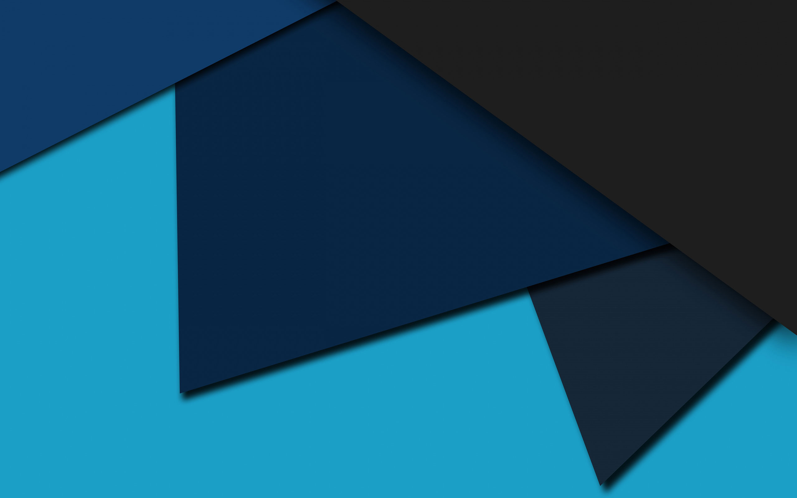

<ion-menu cache-view="false" [content]="content">
  <ion-content>
    <div class="div-menu">
      
      <div class="profile">
      
      <h6 class="text2">{{ firstName }}</h6>
      <p class="text">{{ email }}</p>
      </div>
    </div>
    <ion-list>      
      <button no-lines menuClose ion-item *ngFor="let p of pages" (click)="openPage(p)">
        <ion-icon ios="{{p.ios}}" name="{{p.icon}}" item-start></ion-icon>
        {{p.title}}
      </button>
      <button no-lines menuClose ion-item (click)="logOut()">
        <ion-icon ios="ios-log-out" name="ios-log-out" ios="ios-log-out" item-start></ion-icon>
        Cerrar Sesión
      </button>
    </ion-list>
  </ion-content>
</ion-menu>

<ion-nav id="nav" [root]="rootPage" #content swipeBackEnabled="false"></ion-nav>